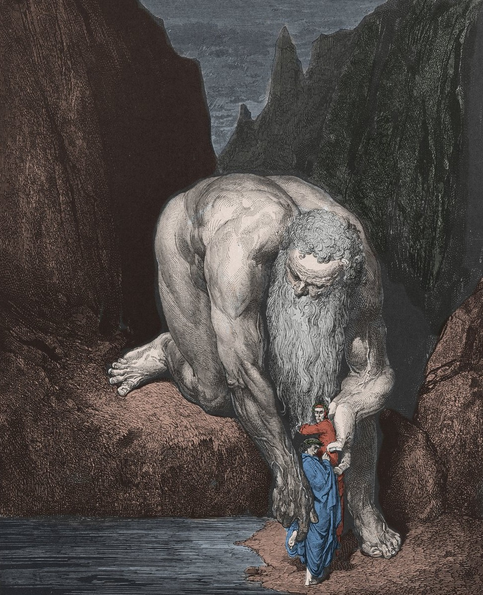

I poeti si avvicinano al nono cerchio e Dante scambia i Giganti per alte torri cittadine. Questi esseri monumentali (tra cui Nembrot ed Efialte) sono conficcati nella roccia intorno al perimetro del pozzo profondo come punizione per la loro superbia contro la divinità. Il gigante Anteo, rimasto libero da catene, prende delicatamente in mano i due poeti e li depone sul fondo ghiacciato di Cocito.
I poeti si trovano nella Caina, prima zona del lago ghiacciato di Cocito, dove i traditori dei parenti sono immersi fino al collo. Successivamente passano nella Antenora, dove sono puniti i traditori della patria. Dante colpisce accidentalmente il capo di Bocca degli Abati e rifiuta ogni pietà, prima di scorgere due dannati stretti nello stesso foro, con uno che rode il cranio dell'altro.
